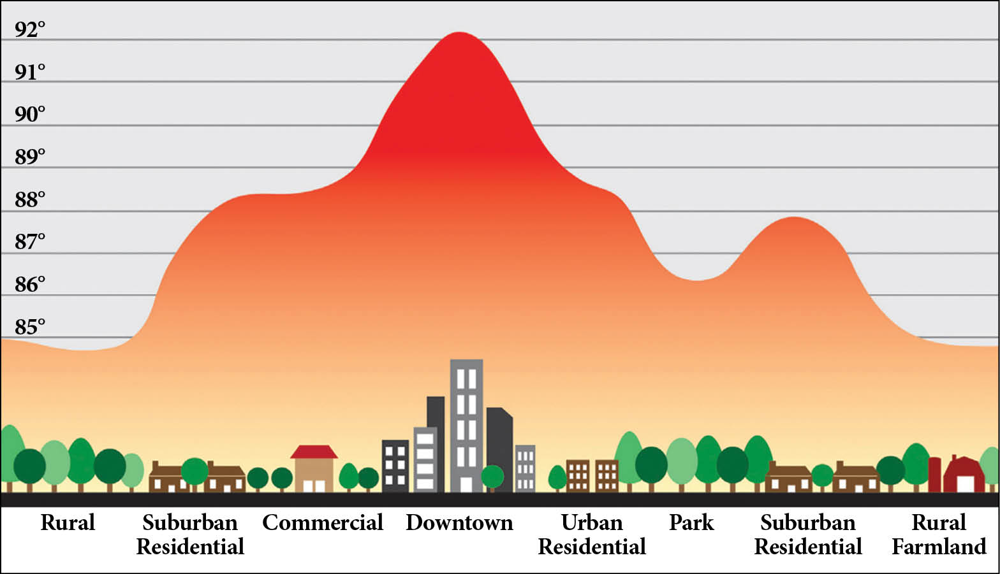

8 Classification I
8.1 Summary
8.1.1 What is Urban Heat Island？
The urban heat island effect is when cities experience higher temperatures than the surrounding countryside. This effect can be very noticeable. On average, city daytime temperatures tend to be 1-7°F higher. This difference persists until night when the temperature in the city is still 5°F warmer than in the surrounding area. Scientists refer to regions affected by these higher temperatures as urban heat islands.
8.1.2 What caused the urban heat island
There are many reasons for UHI. When houses, shops, and industrial buildings are built together, it can create a UHI. Building materials are often very good at thermal insulation or insulation. This insulation makes the area around the building warmer. As cities grow, new developments such as roads and buildings replace natural surfaces such as trees, ponds, and soil. This change in the local environment leads to a corresponding change in the local climate, as these natural surfaces help regulate the temperature.

8.1.3 The impact of urban heat islands
Overheating can have many adverse effects on people and the environment. Air quality suffers because sunlight and radiant heat can quickly turn car exhaust into smoke. According to the Environmental Protection Agency’s website, “Increased daytime temperatures, reduced nighttime cooling, and elevated levels of air pollution associated with urban heat islands can affect human health, resulting in general malaise, difficulty breathing, heat cramps and exhaustion, non-fatal heat stroke, and heat-related mortality.” In short, all this heat is not just uncomfortable; it’s dangerous.

8.1.4 Global policy documents
8.1.4.1 Beating the Heat: A Sustainable Cooling Handbook for Cities
Beating the Heat: A Sustainable Cooling Handbook for Cities was published on March 3, 2021. The new guide provides planners with proven options to help fantastic cities. The guide’s 80 supporting case studies and examples demonstrate the effectiveness of the strategies outlined and can help cities find the approach that best suits their unique environment.

8.1.4.2 Metropolitan (city) policy/temperature reduction activities
Metropolitan is implementing an urban forest program, a coordinated approach to increasing urban canopy cover.
Green spaces and trees offer a range of economic, social and environmental benefits. As the number of days of extreme heat increases year by year and average temperatures continues to rise, methods of cooling cities are becoming increasingly important for public health. The city of Fremantle is divided into several areas in the Urban Forest Plan. These areas are determined based on topography and geology.

8.2 Application
8.2.1 New York City City Heat Island background
Even without long-term climate change, New Yorkers face weather-related risks today. High temperatures and humidity can lead to severe illness and death every summer. In fact, in a typical year, more Americans die from heat waves than all other natural disasters combined, whether direct mortality from heat stress (hyperthermia, also known as heat stroke) or rising mortality from natural causes due to worsening other medical conditions.
8.2.2 New York thermal vulnerability
About 80 per cent of heat stroke sufferers in New York City are overcome by overheating conditions in their homes, as indoor temperatures in urban environments can be even higher than outdoor temperatures when air conditioning is unavailable or not in use.

In 2011, a survey by the Department of Health estimated that 25 per cent of New York City adults still use cold tones with little or no use during hot summer weather, and many of them are at increased risk of heat pressure due to age or poor health.
8.2.3 Build real-time weather surveillance models
The urban climate has undergone significant changes from its natural state due to changes in the physical characteristics of the landscape and the effects associated with population concentration. As a result, the UHI effect will intensify, with global warming, urban sprawl and increased anthropogenic heat flux leading to more significant thermal gradients between urban centres and surrounding rural areas(Fujibe 2011). As a result, the effects of climate change on UHI have been extensively studied, and cooling energy consumption and heat-related mortality are generally thought to increase given the warmer temperatures within urban agglomerations during extreme heat events(Luber and McGeehin 2008). To address these issues, several strategies have been proposed to help mitigate the impact of UHI by lowering the overall temperature of urban environments, including ISG and ISR.
8.3 Detailed implementation
Increase landmark vegetation.In general, the shade of the leaves provides the main cooling effect achieved by vegetation. Otherwise, solar radiation incident on the surface is prevented from reaching the surface below. Additional cooling can be achieved when the transpiration of the leaves and evaporation of the growth medium dissipate the radiation absorbed by the vegetation. Surface cooling produced by evapotranspiration is usually less than surface cooling made by shadows; However, this process effectively reduces the ambient air temperature on a large scale.
Increase surface reflectance (ISR)/cooling system.Urban materials generally have darker colours and higher heat capacity than vegetation. Because of this, urban areas tend to absorb and store more incident solar energy than their surroundings. Depending on the exposed surface, the absorbed radiation is either transmitted through conduction through the façade to the conditioned space or released back into the urban environment by radiation and convection. Cooling materials utilise a natural cooling process that removes energy from urban environments.
8.3.1 Tollkit
Trees and vegetation - Increasing tree and vegetation cover reduce surface and air temperatures by evapotranspiration, providing shade and cooling.
Green roofs - Planting vegetation layers (plants, shrubs, grasses, and trees) on the top reduces the temperature of the roof surface and surrounding air and improves stormwater management.
Cool Roof - Installation of a cool roof - A roof made of a material or coating made of a material or coating that significantly reflects the sunlight and heat of the building.
Cool pavement - Use more astounding paving materials than traditional pavement on sidewalks, parking lots, and streets.